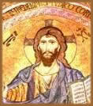

O povo de
Israel esperava um guerreiro que os libertasse dos seus opressores.
Jesus pregava o amor irrestrito e o Reino de Deus na Terra.
Saiba mais
sobre o choque inevitável entre duas visões tão diferentes.
Jesus foi identificado como o Messias
por seus seguidores. Esse título - Cristo, em
grego - designava o indivíduo escolhido por Deus para
desempenhar uma missão especial junto ao povo. A palavra
vem do hebraico Mashiah, que significa Ungido.
E era originalmente utilizada para designar o sumo sacerdote,
sobre cuja cabeça se derramava o óleo santo, como
consagração de sua liderança espiritual
e política. A unção foi estendida depois
aos reis de Israel.
Esperando um
guerreiro invencível
No
tempo de Jesus, a expectativa em relação à
volta do Messias tornou-se extraordinariamente intensa. Era
a resposta do imaginário popular frente a um contexto
de aguda opressão econômica, social e política
e profunda crise dos valores tradicionais. Como enviado de Deus,
o Messias deveria liderar uma revolução capaz
de enxotar os dominadores romanos e derrubar a corrupta dinastia
herodiana, restaurando uma realeza legítima em Israel.
Isso era o que o povo esperava de Jesus. Na condição
de Messias, ele foi recebido em triunfo em Jerusalém,
no início de sua última semana de vida. Mas a
rápida evolução dos acontecimentos frustrou
essa expectativa guerreira, nacionalista e monárquica.
E a frustração popular foi habilmente explorada
pelos inimigos de Jesus (especialmente os saduceus), que o condenaram
à morte.
Por que o povo
abandonou Jesus?
No famoso livro Jesus Cristo Libertador,
o teólogo brasileiro Leonardo Boff analisa essa contradição
entre a atuação do mestre e as ilusões
messiânicas de seu tempo. A prática de Jesus, diz
Boff, contesta as estruturas da sociedade e da religião
da época. Ele não se apresenta como um reformista
ascético à maneira dos essênios, nem como
observante da tradição como os fariseus, mas como
um libertador profético. No entanto, prossegue o teólogo,
Jesus não se organizou para a tomada do poder político.
Pois sempre considerou o poder político como tentação
diabólica, porque implicava uma regionalização
do Reino, que é universal.
A revolução
de Cristo
A revolução messiânica que
muitos aguardavam tinha um caráter imediatista e limitado.
Bastava libertar o país da dominação estrangeira,
restabelecer a legitimidade política e tudo estaria resolvido.
A revolução proposta por Jesus era um processo
de longo prazo, incomparavelmente mais amplo e profundo. Ela
deveria ocorrer no interior das consciências, exteriorizando-se
como transformação radical de toda a existência.
Sua meta: realizar o Reino de Deus na Terra. "Eu vim
para que tenham vida e a tenham em abundância",
afirma Jesus, no evangelho de João.